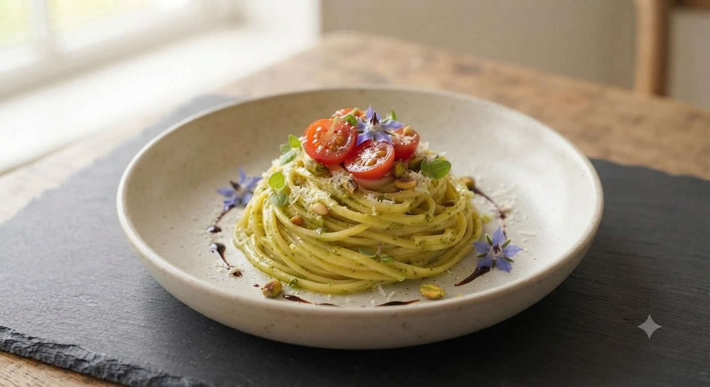
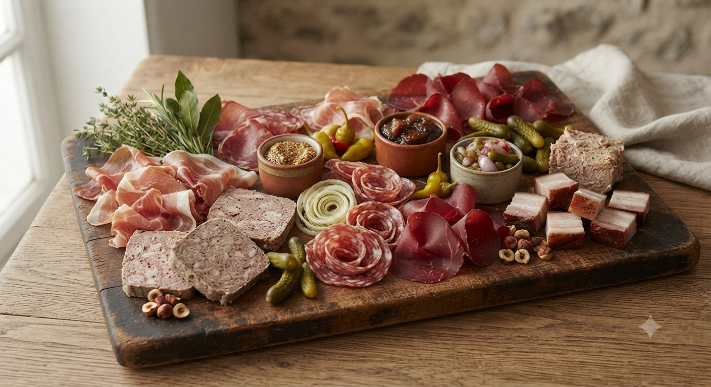
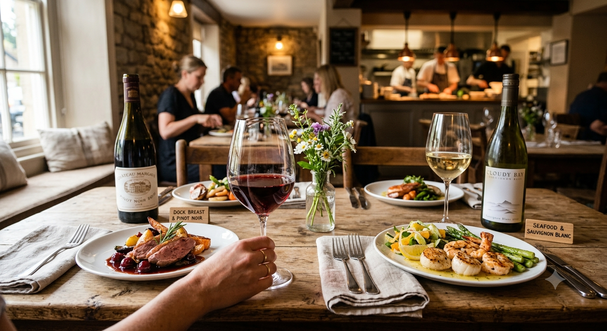

16:00 OPEN | HAPPY HOUR | CHARCUTERIE & WINE

マーキガルニに訪れたら、まずは「シャルキュトリーの盛り合わせ」を。自家製ハム、パテ、ソーセージなど、ワインとの相性を計算し尽くした逸品です。素材の旨味を最大限に引き出した大人の味をお愉しみください。
山形駅前の喧騒を少し抜けた場所、美装ビルの南側。
16時のオープンとともに、私たちの「おもてなし」が始まります。
お一人様でグラスを傾ける夕暮れも、
女子会で笑い声が弾む賑やかな夜も。
美味しい料理と、心地よい距離感の接客で、
明日への活力をチャージしてほしい。
「マーキガルニ」は、そんなあなたのための場所です。
「こんなマーキガルニがあったら嬉しい！」にお応えして。
皆様の期待をもとに、新しい試みを準備・検討中です。
「昼からマーキガルニの味を楽しみたい」「サクッと美味しい洋食ランチが食べたい」という声にお応えして。名物洋食ワンプレートや、昼飲みハッピーアワーを構想中。
シェフ特製のシャルキュトリー盛り合わせやオードブルを詰め合わせたお持ち帰り用BOX。ホームパーティーやご自宅でのワインタイム、手土産に最適です。
山形駅より徒歩数分。香澄町の美装ビル南側です。
オープンから多くのお客様にご支持いただいています。皆様の「美味しかった」が私たちの原動力です。
"料理、ワイン、接客全てにおいて最高なお店です。1人でも入りやすく、素敵な常連様との楽しい時間を過ごせました。"
"飲み放題付きコースのコスパが抜群！ワインも赤白各4種類、スパークリングもあります。女子会にもオススメです。"
"16時OPENなのが嬉しい。スタッフさんの接客も良い感じで、有意義な時間を過ごしました。料理はどれも旨い！"
